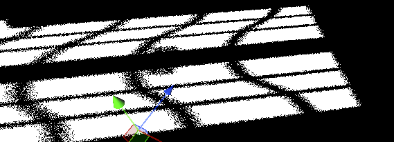
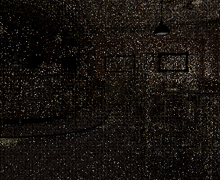
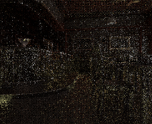
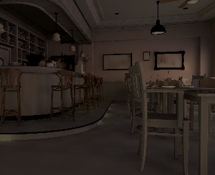
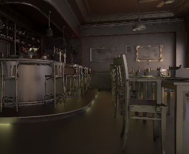
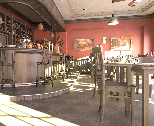
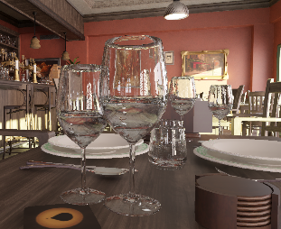
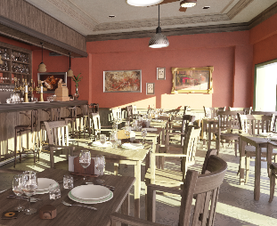
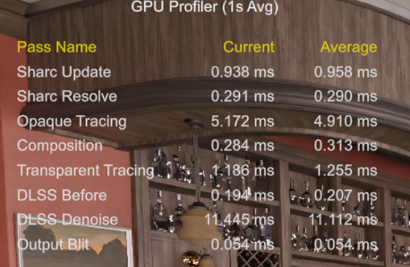

NRDSample 在 Unity 中的实现
序
之前偶然看到了Nvidia的各种RTX实时路径追踪在UE中的项目，手痒难耐，想在Unity中实现一个类似的实时路径追踪，于是就有了这篇文章。
随便从一个NRD的示例入手，NRDSample，这是一个Nvidia提供的开源项目，展示了如何使用NRD库实现各种降噪技术。
其中也包含了路径追踪的实现，非常适合用来学习和实验。
降噪所需资源
NRD包含了多种降噪算法，每种算法对输入数据的要求不同。
先从最简单的阴影降噪器 SIGMA_SHADOW 出发试试水。
根据文档，SIGMA_SHADOW 需要以下输入资源：
- IN_PENUMBRA (半影遮挡率)
- OUT_SHADOW_TRANSLUCENCY (输出阴影)
除了这些，还需要一些通用资源：
- IN_MV (运动矢量)
- IN_NORMAL_ROUGHNESS (法线和粗糙度)
- IN_VIEWZ (视图深度)
Unity 实现步骤
因为Unity截至6.3版本，仍然没有适配bindless，所以无法使用计算着色器+内联光追+Bindless的方式来获取GBuffer数据。
只能改用光追管线。
剩下就没啥说的了，一发光追，拿到GBuffer数据。
IN_PENUMBRA这里要输入的是主表面沿着光线方向的遮挡距离，示例建议使用蓝噪去采样。

然后把这些数据传给NRD进行降噪。
问题是怎么传递呢？
传递数据给NRD
NRD提供的相关接口都是C++的，Unity中无法直接调用。
所以需要通过Native Plugin的方式来调用C++代码。
而且NRD提供了一个包装好的类，省去了自己管理帧间资源的麻烦。
所以要引入NRI库。
将Unity端的纹理全部获取到原生指针，一发 natCmd.IssuePluginEventAndData 就可以把数据传给NRD进行降噪了。
C++端还要将这些纹理包装成NRI的纹理对象，然后传给NRD进行处理。
尤其要注意这里的屏障转换，Unity在6.3版本中新添加了可以声明的资源状态转换API。
这样就算是完整跑通了一个降噪流程。
漫反射与镜面反射降噪
接下来是 Diffuse Specular 降噪器。
同理，准备好需要的噪声资源：


然后传给NRD进行降噪：


静态效果还是很不错的。
合成
最后就是合成了，因为是分开降噪的漫反射和镜面反射，所以要把它们合成到一起。
这里就不赘述了，直接上效果图：

透明处理
透明物体的处理比较麻烦一些，因为NRD并没有专门针对透明物体的降噪器。
所以这里还要来一发光追管线，专门处理透明物体的反射与折射。
这里的反射与折射会使用降噪后的不透明物体的结果进行采样，所以噪点会少一点。
TAA
最后还要加上一个TAA，一是配合抖动抗锯齿，二是对透明物体的噪点进行进一步的平滑处理。
这就是最终的效果了：

DLSS RR
看到了赛博朋克2077的技术分享，他们最初也是采用的NRD降噪，但是最新的版本已经换成RestirDI+GI+DLSS RR了。
所以这里也尝试了一下DLSS RR。
即不使用NRD降噪，而是直接合成，透明物体的反射与折射也是直接在噪声图片上采样。
然后直接一发DLSS RR，大力出奇迹。
效果如下：

也许静态效果二者差别不大，但是动态效果NRD的降噪会有明显的模糊，而DLSS RR则会好很多。
最后看看性能：

在4060上，1080P分辨率下，大概50帧左右，勉强能用。
可以看到大头是在DLSS RR上，这个东西没有任何优化的空间，但是可以调整DLSS的质量等级来换取性能。稍微调低一些质量，性能会有明显提升。
Sharc 缓存
NRDSample中还包含了Sharc缓存的实现，可以缓存一些光照信息，减少每帧的计算量。
这里也一并实现了，尤其是透明物体的反射与折射，使用缓存的话，性能提升还是比较明显的。
不过Sharc缓存的实现比较复杂，这里就不展开讲了。
总结
这次在Unity中复刻NRDSample的过程还是比较顺利的，主要是因为NRD本身设计得比较好，接口也比较清晰。
通过Native Plugin的方式调用C++代码，也比较方便。
唯一可惜的是Unity目前还不支持bindless，所以只能用光追管线来获取GBuffer数据，性能上会有一些损失。
不过整体效果还是不错的，尤其是使用DLSS
RR之后，动态效果有了明显提升。
后续又适配了VR，效果也还不错，只是性能压力更大一些，DLSS RR在4060上必须要开到质量挡位才能勉强跑起来，如果是5080应该可以双目4000*2000原生分辨率跑满60帧没问题。